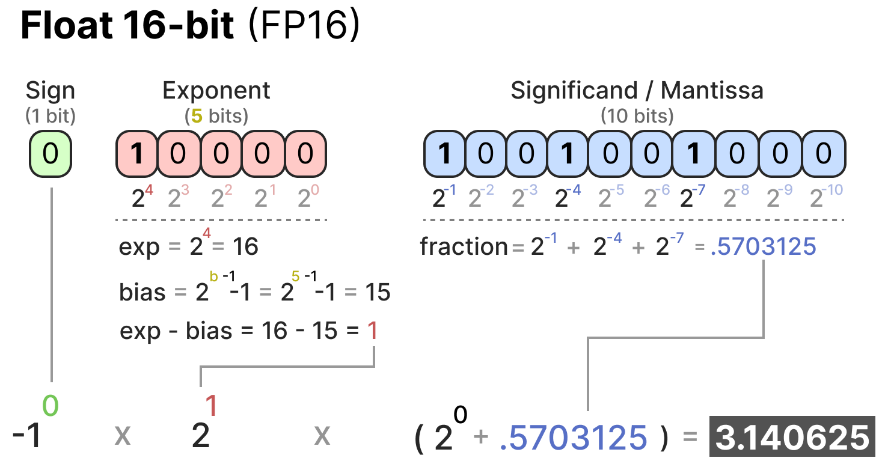
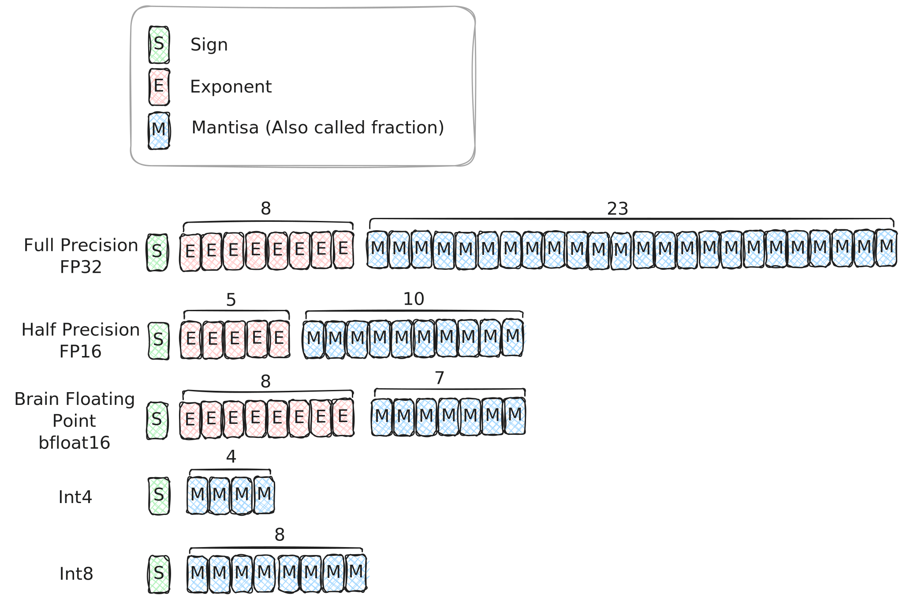
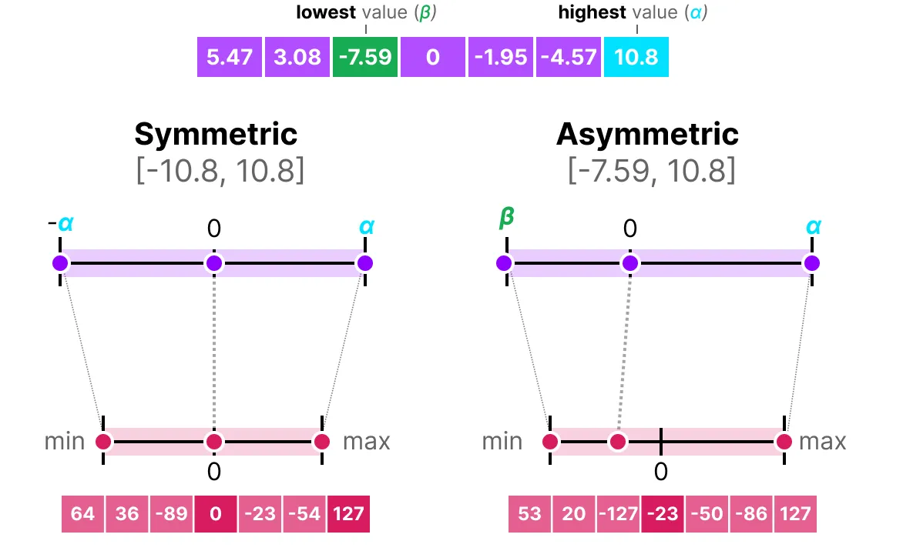
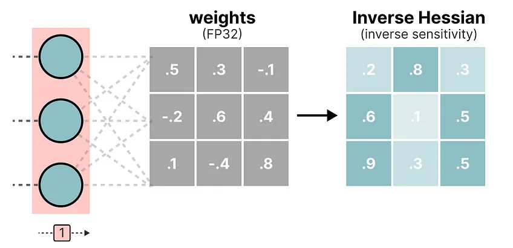
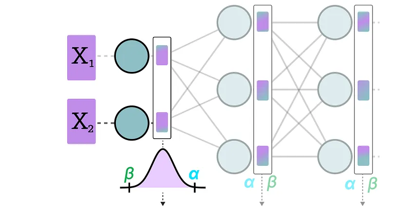
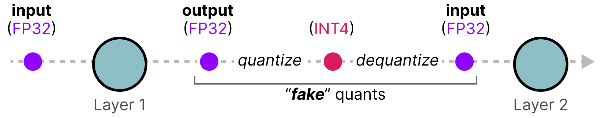
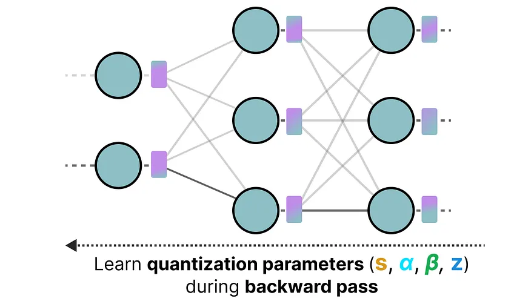
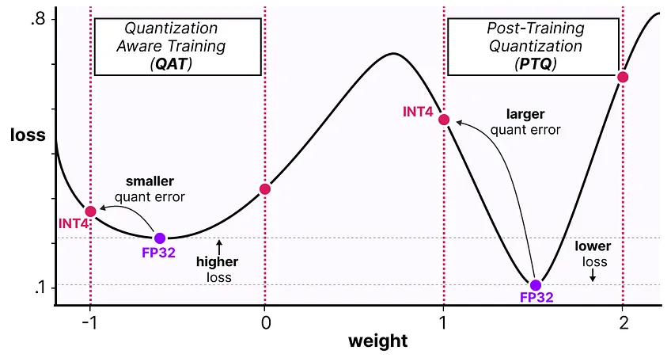

LLM models commonly consists of metadata such as the metadata, quantization
methods, and the tensor themselves. The following shows the layout of the gguf
file format.
huggingface .
bin/pth/tf: "raw" ML library formats;
safetensors: used by huggingface;
ggml/gguf: developed by llama.cpp
(supports many qunatization formats);
llamafile : by mozilla, single-file
format, executable.
In some repos, you can find detailed model information for some model formats,
example .
Models published on different formats are optimized for different usages. They
can be converted to one another (which is typically implemented as model loaders
by inference engines,
example ).
raw formats used by ML formats might be handy for re-training. Some of them
contain pickled data so might execute arbitrary code (in contrary to "safe"
formats).
Newer formats like GGUF/safetensors are suitable for common model architectures
(different engines will support them if the architecture is known). They are
memory-mapped, which are especially useful for disk offloading .
Picking a model
While not strictly a requirement, it is usually less trouble to get a model in
your desired format. The other part of the model name is usually tell you the
quantization method and the number formats in the model.
In the following, we will introduce the quantization procedure and how that
impacts the performance (both in terms of speed and accuracy) and hardware
compatibility.
Quantization method;
Number format;
Hardware compatibility.
Why do we care?
ML tolerates lower numerical precision;
Quantization allow you to run larger models;
To eliminate expensive communication;
Floating point number is the most common way one represents a real number in a
computer. A floating point number uses a fixed number of bits and represents a
number in terms of an exponent and mantissa (significand).
Maarten Grootendorst
The mantissa determines the significant digits of a FP number, and the exponent
determines the range. Standard FP numbers typically aim to strike a balance
between accuracy and range.
Hamzael Shafie
For ML application, it is beneficial to use a reduced precision format with the
same number of exponents, as that simplifies the quantization procedure, and it
has been
claimed
that "neural networks are far more sensitive to the size of the exponent than
that of the mantissa".
As an example, converting from FP32 to BF16 will be trivial as the dynamic range
is the same. One would only need to discard mantissa from FP32. In contrary,
conversion from FP32 to FP16 will require scaling or clipping the number. With
implication to be decided.
While not detailed here, integers are also used as quantization targets. Besides
the dynamic range, note that integers numbers will also have different scales as
compared to FP numbers.
Maarten Grootendorst
Hardware Compatibility
Acceleration of floating point operations requires also support from hardware
vendor or custom implementations of numeric kernels. Newer number formats are
not necessarily accelerated by the GPU and might get converted back depending on
implementation.
Below lists some commonly used FP formats and their hardware support status:
hardware accel.
note
fp16/32/64
most gpus
IEEE 754
fp8 (E4M3/E5M2)
hooper
Recent IEEE
bf16
most gpus
Google's
tf32
nvidia-gpus
Nvidia
int4/8
most GPUs
See also Data types support by AMD RocM.
Rule of thumb
Google's bf16 if unsure (same range as fp32, less mantissa, good compatibility);training usually done in fp32/bf16;
int4/8 is good for inference (on older GPUs).
Quantization methods
Quantization target
Quantization can be applied to weights, activations or KV-caches; Weights are
the most common target to quantize as weights are the most memory-hungry part of
the model. It is possible to quantize only part of the model (
non-uniform quantization )
Weight/activation/mixed percision (w8a16);
KV-cache;
Non-uniform;
Mixed-precision evaluation of matrix multiplications depends on the hardware; it
might or might not support converting the tensors between precision or doing
tensor operations natively.
For instance, FP8 is not officially support on Ampere GPUs (A40 and A100). While
there exist implementations that makes w8a16 operations available,
quantizating KV cache to FP8 currently need hardware
support .
(A)symmetric qunatization
One important aspect when quantizing the models is the range of the model, the
easiest way is to simply scale the parameters by a factor.
Maarten Grootendorst
position of zero;
range of parameters;
simple for implementation;
To minimize loss of precision, we could map the parameters according to the
max/min values of the parameter, rather than the number-format range. There, we
need to choose whether we shift the zero point in the transform (but introduces
complexity in computation).
Clipping
Maarten Grootendorst
Calibration for weight quantization
For weights of the model We can simply quantize them, since we know their
distribution. But given some small dataset but we can also improved the accuracy
but estimating how important each parameter it.
A popular way to do that is the GPTQ method.
Maarten Grootendorst
Calibration for activation quantization
To also quantize the activation function, we need to estimate the range of
activation, that has to be done by passing data to the model and collect
minima/maximi. We can do that either dynamically (during inference) or
statically (with a calibration set).
Maarten Grootendorst
The range can be estimated can be dynamically (on the fly) or statically.
Sparsification
Nvidia technical blog /
Models may also be sparsified to reduce the required computation, this is
commonly known as weight pruning. But some GPUs also support efficient
evaluation of sparse matrices if the sparsity follow certain pattern (example
with llm-compressor );
Post-training quantization methods (PTQ)
Weight and activation;
Not detailed: sparsification/KV cache.
Calibration/accuracy trade off;
Quantization aware training (QAT)
But we get higher accuracy by using the Quantization aware training (QAT)
method. There we perform the quantization/dequantization during the training
process.

Maarten Grootendorst
The first benefit is that we can actually optimize the quantization parameters
as part of the training process.
Quantization aware training (QAT) - cont.
As we introduce the quantization error in the training process, we are will
arrive at a model with higher loss during training.
Maarten Grootendorst
The reason why it might work better, is that we force the model to land in a
local minima where it is less sensitive to model parameters. So even the
original model performs worse, the quantized model would perform better than
those quantized with PTQ.
Summary
When choosing a model
Know the hardware/implementation compatibility;
Find the right model/format/qunatization;
Quantize if needed;
Look up/run benchmarks.
Other useful links
Benchmarks: